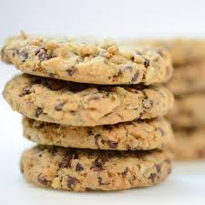

Cholate Chip Cookies

Description
Cookies are great, especially when they have chocolate chips, its the combination between a soft crispy dough, and the sweet and tasty flavor of chocolate
When both come together, they form the most delicious dessert in existence
Ingredients
- 180g of butter
- 1 cup of sugar
- 1 teaspoonful of vanilla
- 1 egg
- 2 teaspoonful of baking powder
- 3 cups of flour
- 1 1/2 cups of chocolate chips
Steps
- To start, we are going to mix the butter with the sugar in a bowl until we have a creamy and homogeneous mixture.
- Add the egg and the teaspoon of vanilla and mix again until everything is well integrated.
- Now, add the flour and the baking powder and we integrate again
- When everything is mixed, we are going to take it out of our bowl and start kneading with our hands until we have a moldable
- Add the chocolate chips and form the cookies and place them on a tray with butter paper (or butter and flour) underneath.
- We bake them for approximately 10 to 20 minutes at 180°C
- Finally and the most important step, enjoy them! If you leave them resting for one night, they will be even more delicious